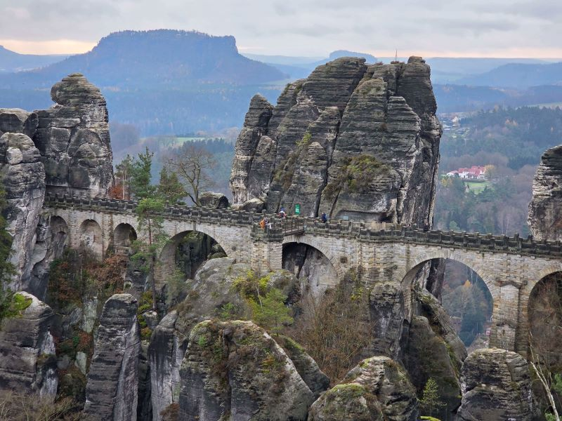
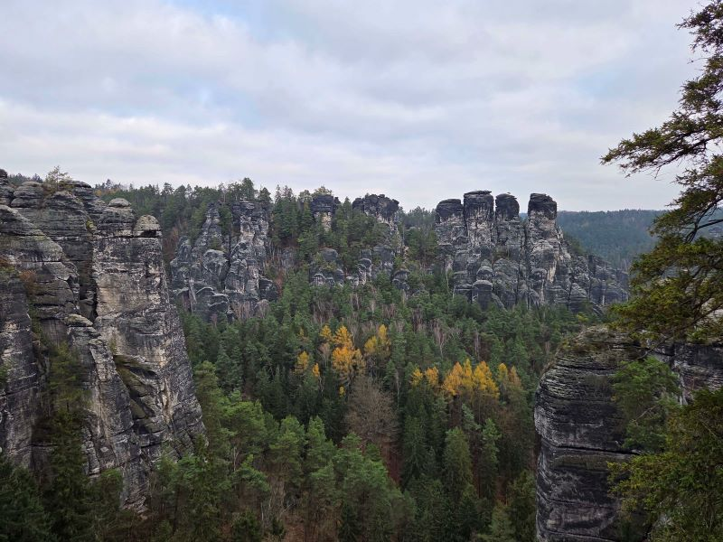
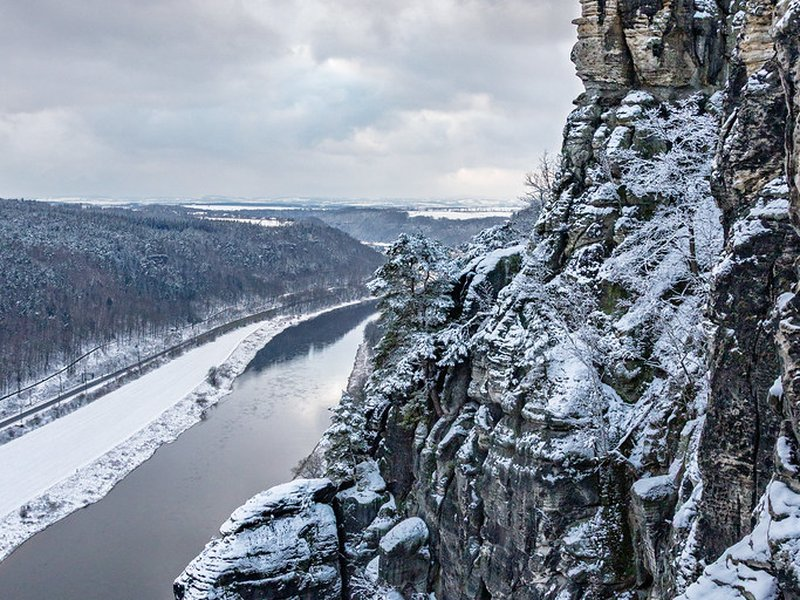
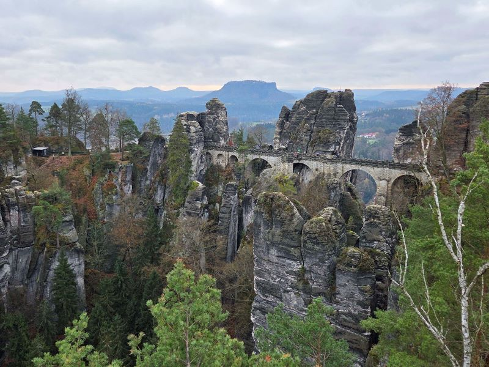
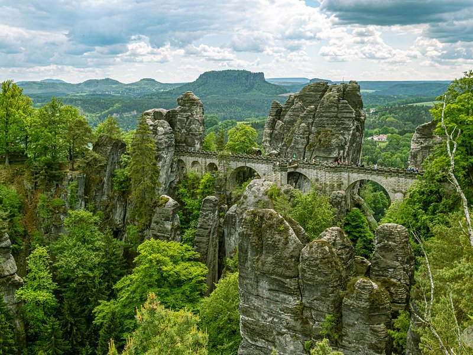

Explore Sächsische Schweiz National Park
A Brief History
Sächsische Schweiz (Saxon Switzerland) is a national park in the Elbe Sandstone Mountains east of Dresden, where erosion carved towers, gorges, and mesas above the Elbe River. Human settlement and quarrying date to the Middle Ages, but the Bastei Bridge, opened in 1851, helped turn the landscape into a destination for hikers and artists linked to German Romanticism. The park, established in 1990, protects forests, rock habitats, and viewpoints reached by trails and ferries.
Attractions Map
Top Sights & Activities

Bastei Bridge
The Bastei Bridge is a 76-metre sandstone span built in 1851 across a gorge in the Elbe Sandstone Mountains. It links viewing paths above the Elbe River and is open at all hours without admission. The structure sits within Saxon Switzerland National Park near Rathen and Lohmen.

Neurathen Castle
Felsenburg Neurathen is a medieval rock castle ruin carved into the Bastei cliffs. It guarded Elbe valley trade routes and was partly reconstructed as an open-air site. Adult admission applies when the castle is open; check Gemeinde Lohmen for current access status.

Basteiaussicht
Basteiaussicht is the main viewing terrace on the Bastei ridge above the Elbe. From here visitors see the sandstone towers, Königstein in the distance, and the river bend below Rathen. The platform is part of the free public path network around the Bastei bridge.

Ferdinandstein
Ferdinandstein is a named viewpoint on the Bastei formations, associated with Emperor Ferdinand I. It overlooks the Wehlgrund gorge and the stone bridge from a separate rocky spur. Access is along the same free paths that circle the Bastei plateau.

Bastei 1 Bus Stop
Bastei 1 is the principal bus stop for visitors approaching the Bastei from Lohmen, served by regional lines including the summer shuttle. Pine forest and park trails radiate from here toward the bridge and longer hikes into Saxon Switzerland.